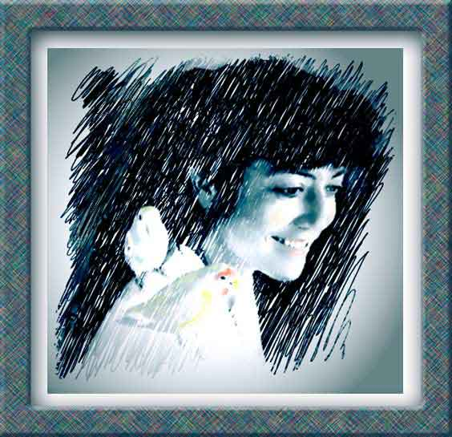

| Lei With Her Love Birds. Paintage: pastel, colored pencil. This is a photo-painting of my younger daughter. Through Photoshop I first modified a photograph I took of her and her birds and then painted over it in Painter to get the image I wanted. |